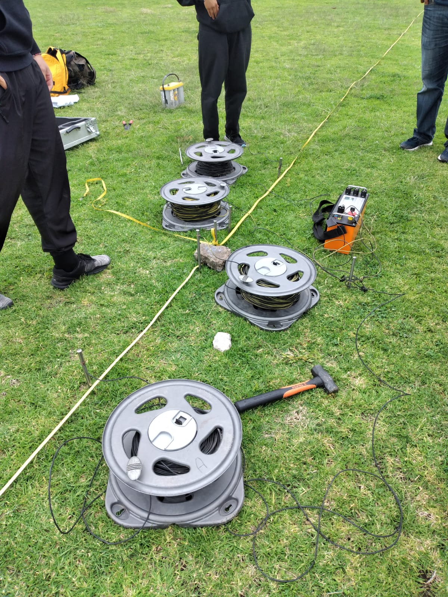
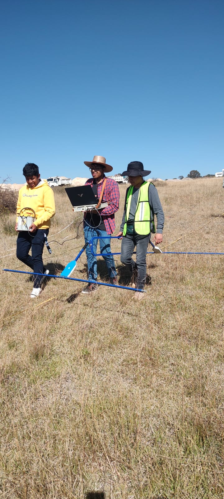

Los métodos geofísicos de exploración, también conocidos como métodos de prospección, son un conjunto de técnicas no invasivas que permiten obtener información sobre las propiedades físicas del subsuelo. A diferencia de los métodos de exploración tradicionales, que a menudo requieren perforaciones o excavaciones, los métodos geofísicos utilizan principios físicos como la conductividad eléctrica, la gravedad, el magnetismo y las ondas sísmicas para investigar la estructura y composición del terreno sin alterarlo directamente. Estos métodos se basan en la medición de variaciones en ciertos parámetros físicos del subsuelo, que pueden indicar la presencia de recursos naturales, diferencias en la composición del suelo, o incluso anomalías que podrían ser indicativas de contaminación o riesgos geológicos.
En cada semestre de la universidad, mi colegio realiza diversos trabajos en campo donde se utilizan métodos de prospección. Con el propósito de conocer la instrumentación que se aplica así como el análisis de los parámetros en las diferentes zonas de estudio. Algunos trabajos han sido referente a los siguientes métodos:
Los datos adquiridos se procesan en diferentes softwares según sea el caso y se analizan, para posteriormente realizar un informe sobre las anomalías de la zona.
 